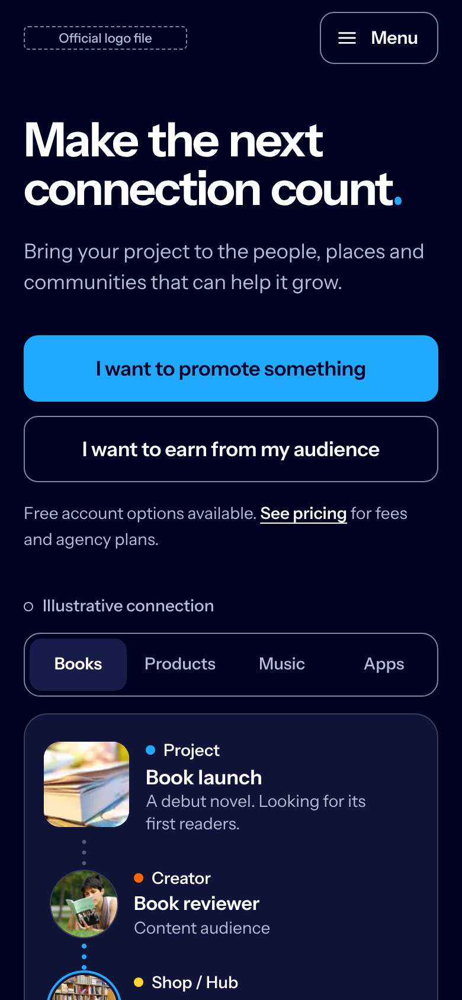
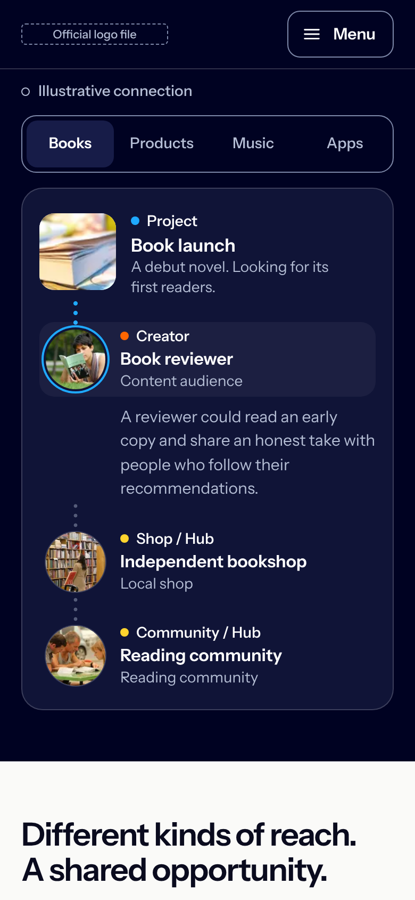
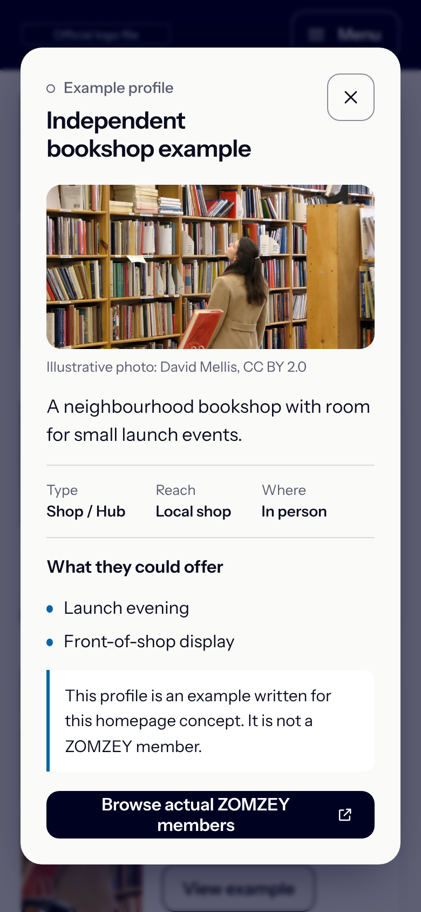

Mobile concept
A readable vertical relationship story
The perimeter network is recomposed, not shrunk: message and both intent actions first, then one project and three participants on a clear vertical line.

Opening, 390 × 844
Headline, description and both actions before any scrolling.

Vertical connection story
Four scenarios in one row; tap a participant to read its example.

Example detail
Labelled Example profile, with a route to real ZOMZEY members.

Menu
Labelled Menu button, every primary link, sign in and join. Escape returns focus.
ZOMZEY homepage concept prototypeCaptured from the running prototype at 390 × 844 (2×)